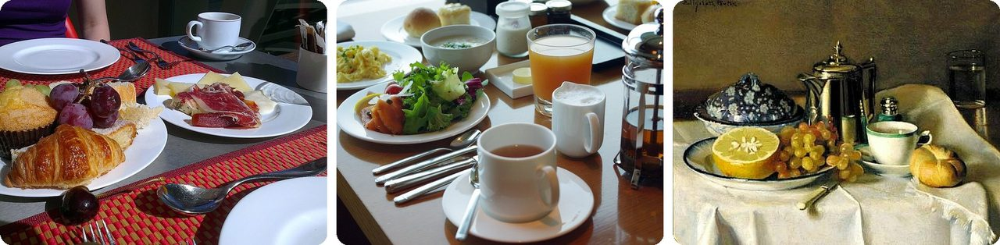
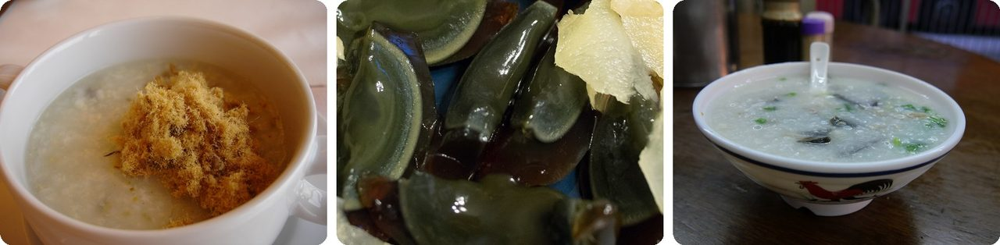

🌍 十大 最奇怪的酒店早餐
2026年11月26日
1. 🇺🇸 班尼迪克蛋可能是从一份宿醉早餐开始的
 1942 年，一位叫莱缪尔·班尼迪克的退休华尔街股票经纪人，跟《纽约客》杂志讲了一道有名早餐的来历。他说，1894 年，他宿醉醒来，晃进了纽约的华尔道夫酒店，想找点东西治治头疼。
1942 年，一位叫莱缪尔·班尼迪克的退休华尔街股票经纪人，跟《纽约客》杂志讲了一道有名早餐的来历。他说，1894 年，他宿醉醒来，晃进了纽约的华尔道夫酒店，想找点东西治治头疼。
他点了黄油吐司、水波蛋、脆培根，再加一份荷兰酱。荷兰酱是用鸡蛋、柠檬和融化的黄油做的浓酱。酒店的领班奥斯卡·奇尔基特别喜欢这个搭配，就把它放进了早餐和午餐菜单。他只改了两样：培根换成火腿，吐司换成英式松饼。
这不是唯一的说法。德尔莫尼科餐厅说，它早在 1860 年就做出了这道菜。
说白了，一道经典的美国早餐，可能是从治宿醉开始的。
2. 🏴 伦敦一家酒店为一位小说家发明了鱼肉煎蛋卷
 作家阿诺德·本涅特常常去伦敦萨沃伊酒店里的萨沃伊烧烤餐厅吃饭，去得太勤了，主厨让·巴蒂斯特·维尔洛热就专门为他做了一款煎蛋卷。
作家阿诺德·本涅特常常去伦敦萨沃伊酒店里的萨沃伊烧烤餐厅吃饭，去得太勤了，主厨让·巴蒂斯特·维尔洛热就专门为他做了一款煎蛋卷。
这可不是普通的煎蛋卷。里面包着烟熏黑线鳕，一种带烟熏味的鱼，再加上切达奶酪和奶油。它到现在还是英国的经典菜，萨沃伊烧烤餐厅的菜单上也还有一个它的改良版。
本涅特太喜欢这家酒店了，他研究了酒店是怎么运转的，还在 1930 年写了一整本以类似酒店为背景的小说《帝国宫殿》。
你可以把它想成一个铁杆粉丝，得到了一道以自己名字命名的菜。
3. 🇮🇱 以色列的酒店想取消超大早餐，结果没成功
 以色列早餐来自基布兹，也就是大家一起生活、一起干活的集体农场。农场的人一大早先吃点小东西，下地干几个小时活，再回到公共食堂吃一顿丰盛的自助餐。
以色列早餐来自基布兹，也就是大家一起生活、一起干活的集体农场。农场的人一大早先吃点小东西，下地干几个小时活，再回到公共食堂吃一顿丰盛的自助餐。
到了 20 世纪 50 年代，酒店开始学这一套：沙拉、奶酪、鸡蛋、鲱鱼之类的鱼、面包和点心。里面几乎从来没有肉，因为犹太饮食规定，肉和奶制品不能在同一顿饭里吃。
1979 年，酒店老板们决定把它换成一份小一点的早餐，好省点钱。他们说的理由之一是：游客总是多拿早餐，留着下一顿再吃。这个计划没成功，大自助餐又回来了。
换句话说，这顿早餐好吃到客人要留着以后吃。
4. 🛎️ 欧陆式早餐是酒店发明的，不是欧洲

“欧陆”指的是欧洲大陆，可这种早餐其实是英语国家的酒店业搞出来的。这个名字最早在 1896 年出现在美国，是在纽约出版的一本讲公共卫生的书里。这些食物不是因为好吃才选的。选它们，是因为不用冰箱也能放得住，而且很容易一下子分给一大群人：面包、松饼、点心、水果、麦片，还有小包装的黄油和果酱。
这也是便宜酒店特别爱它的原因。比起现做的热早餐，它需要的人手少多了。
说到底，这是一份专门设计来摆上一整个早上的早餐。
5. 🥞 有些酒店让客人自己开煎饼机
 已知最早的煎饼机是 1928 年在俄勒冈州波特兰发明的。一股股气流把面糊推到一块旋转的热铁板上，煎到一半，一个小架子会把煎饼翻个面，最后一个小挡门把煎好的饼推出来。
已知最早的煎饼机是 1928 年在俄勒冈州波特兰发明的。一股股气流把面糊推到一块旋转的热铁板上，煎到一半，一个小架子会把煎饼翻个面，最后一个小挡门把煎好的饼推出来。
如今，有些酒店的煎饼机可以让客人自己操作，高级的机场贵宾室里也有。
也有人自己动手做。1977 年，佛罗里达州奥卡拉的一个俱乐部做了一台，要四个人一起操作，一小时能煎 750 到 1,000 张煎饼，每分钟超过 12 张。
早餐厅里的一个机器人快餐厨师。
6. 🇯🇵 日本拉丝的纳豆，可能是从马饲料开始的
 纳豆是用一种有益细菌发酵的黄豆，常常配米饭当早餐吃。在日本，叫“旅馆”（ryokan）的传统客栈会提供一整套传统早餐，西式酒店一般是日式和西式混着来。
纳豆是用一种有益细菌发酵的黄豆，常常配米饭当早餐吃。在日本，叫“旅馆”（ryokan）的传统客栈会提供一整套传统早餐，西式酒店一般是日式和西式混着来。
纳豆闻起来有点像又冲又老的奶酪。一搅拌，就会拉出好多黏黏的丝，就像怎么也扯不断的融化奶酪。
有个传说讲，它是从一位武士的士兵开始的。他们正在给马煮黄豆，突然遭到攻击，只好把豆子塞进稻草袋里。几天后，豆子发酵了，士兵们照样吃了，还觉得挺好吃。
你可以把它想成一场变成早餐的意外。
7. 🇨🇳 皮蛋不是一百年的老蛋，只是彻底变了样

皮蛋，中文叫 pídàn（皮蛋），英文叫“世纪蛋”。它是把鸭蛋、鸡蛋或鹌鹑蛋裹在黏土、草木灰、盐、石灰和稻壳混成的料里，放上几周到几个月，可不是一百年。这些料会慢慢把蛋变成另一样东西。蛋黄变成深灰绿色，又滑又软；蛋白变成透明的褐色果冻。最好的皮蛋，蛋白上还有像松枝一样的花纹。
在泰国和老挝，它的名字意思是“马尿蛋”，可它根本不是用马尿做的。那只是个误会，可能是因为它味道很冲。有些中国家庭会把皮蛋切块，煮成皮蛋瘦肉粥，也就是 pídàn shòuròu zhōu（皮蛋瘦肉粥）。
换句话说，这是一颗在泥浴里彻底改头换面的蛋。
8. 🇸🇪 瑞典人早餐从管子里挤鱼子酱
 典型的瑞典早餐是开放式三明治，最受欢迎的抹料之一是一种用鱼卵做的三明治酱。一个经典牌子叫 Kalles，用烟熏、加糖又加盐的鳕鱼子（鱼卵）做成。
典型的瑞典早餐是开放式三明治，最受欢迎的抹料之一是一种用鱼卵做的三明治酱。一个经典牌子叫 Kalles，用烟熏、加糖又加盐的鳕鱼子（鱼卵）做成。
它装在像牙膏一样的金属管里。这是故意的：塑料管一挤一松，会把空气吸回去，空气会让酱变质。金属管挤扁了就一直扁着。
从 1954 年起，管子上那个男孩就是老板的儿子卡尔，小名叫 Kalle。2011 年，宜家把 Kalles 换成了自家的牌子，大家很不高兴，没过几年它又回到了货架上。
这就是给三明治用的牙膏。
9. 🇳🇱 荷兰人在面包上撒巧克力“冰雹”
 Hagelslag 的意思是“冰雹”。它是一种细细的巧克力碎，荷兰人早餐或午餐时把它撒在抹了黄油的面包上。在比利时，人们开玩笑叫它 muizenstrontjes，意思是“老鼠屎”。
Hagelslag 的意思是“冰雹”。它是一种细细的巧克力碎，荷兰人早餐或午餐时把它撒在抹了黄油的面包上。在比利时，人们开玩笑叫它 muizenstrontjes，意思是“老鼠屎”。
荷兰人每天大约要吃 75 万个巧克力碎三明治。一年下来，要吃掉超过 1,400 万公斤的巧克力碎，比 2,000 头大象还重。
最大的生产商 Venz 从 1936 年就开始做巧克力碎了。有黑巧克力、牛奶巧克力、白巧克力的，甚至还有水果味的。
所以在荷兰，早餐吃巧克力碎再正常不过了。
10. 🇬🇧 有人拿黑布丁来比赛扔着玩
 黑布丁其实是一种香肠，用猪血、脂肪和燕麦或大麦做成。它是全套英式早餐的一部分，旁边还有培根、香肠、鸡蛋、焗豆和吐司。
黑布丁其实是一种香肠，用猪血、脂肪和燕麦或大麦做成。它是全套英式早餐的一部分，旁边还有培根、香肠、鸡蛋、焗豆和吐司。
不是人人都爱它。2017 年一项关于“理想的全套英式早餐”的调查里，它是传统食材中最不受欢迎的，只有 35% 的时候被选上。
可也有人特别爱它。在曼彻斯特附近的拉姆斯博特姆，从 20 世纪 80 年代起，每年都会举办世界黑布丁投掷锦标赛。大家拿黑布丁去砸一堆堆约克郡布丁，开的是兰开夏郡和约克郡老对头的玩笑。
所以说，这是一份还能当球扔的早餐。
趣闻
在萨沃伊酒店拥有专属菜品的名人，可不只阿诺德·本涅特一个。1893 年，酒店主厨奥古斯特·埃斯科菲耶发明了蜜桃梅尔巴，这道甜点是以澳大利亚歌手内莉·梅尔巴的名字命名的。本涅特、梅尔巴和作曲家罗西尼，都有以自己名字命名的名菜。从三明治到披萨，那些以真人命名的食物，可以是下一个好吃的主题。
图片来源（Wikimedia Commons）
- #1: Traditional Eggs Benedict.jpg by Mark Miller, CC BY-SA 4.0
- #1: Dancing at the Waldorf Astoria.jpg by Henry James Soulen, Public domain
- #1: Classic Eggs Benedict (flickr) by thebittenword.com, CC BY 2.0
- #2: Entrance to the Savoy Hotel, London - geograph.org.uk - 2281522.jpg by Anthony O'Neil, CC BY-SA 2.0
- #2: Omelette 1.jpg by Gaurav Dhwaj Khadka, CC BY-SA 4.0
- #2: Savoy Hotel Foyer - geograph.org.uk - 4519342.jpg by Anthony O'Neil, CC BY-SA 2.0
- #3: Israeli breakfast (flickr) by TeamRakbo, Public domain
- #3: Liat Portal for Foodie Disorder - Israeli breakfast in Tel Aviv.jpg by HaJunkiyada, CC BY-SA 4.0
- #3: Israeli breakfast (flickr) by Londo Mollari, CC BY-SA 2.0
- #4: Continental Breakfast.jpg by William J Sisti, CC BY-SA 2.0
- #4: Continental Breakfast (5618024251).jpg by Matt @ PEK from Taipei, Taiwan, CC BY-SA 2.0
- #4: Elizabeth Okie Paxton, Continental Breakfast.jpg by Elizabeth Okie Paxton, Public domain
- #5: Breakfast Pancake machine in Hotel. NICE. (flickr) by GoodNCrazy, CC BY 2.0
- #5: Pancake Machine (flickr) by reivax, CC BY-SA 2.0
- #5: Pancake machine (flickr) by WordRidden, CC BY 2.0
- #6: Natto mixed by Kinchan1.jpg by Kinchan1, CC BY 2.0
- #6: Rice seasoned with Natto.jpg by Qbwr8296, CC BY-SA 4.0
- #6: Natto (flickr) by snowpea&bokchoi, CC BY 2.0
- #7: Century egg porridge with pork by gigijin at Salvo Hotel Shanghai.jpg by gigijin from Salvo Hotel Shanghai, CC BY-SA 2.0
- #7: Century eggs with pickle ginger.jpg by Takeaway, CC BY-SA 3.0
- #7: A century eggs and Pork Congee from Chi Kee Congee Shop.jpg by Peachyeung316, CC BY-SA 4.0
- #8: Kalles Kaviar (cropped).jpg by Petey21, Public domain
- #8: KALLES kaviar (flickr) by kobakou, CC BY 2.0
- #8: Kalles Kaviar and eggs (flickr) by lovelihood, CC BY-SA 2.0
- #9: Hagelslag, a childrens favourite (flickr) by Ronald van der Graaf, CC BY 2.0
- #9: Hagelslag.jpg by No machine-readable author provided. DennisM assumed (based on copyright claims)., Public domain
- #9: Hagelslag chocolate sprinkles.jpg by Amin, CC BY-SA 4.0
- #10: Black Pudding - Classic English Breakfast - Jones the Grocer, Chadstone AUD13 (flickr) by avlxyz, CC BY-SA 2.0
- #10: Stornoway Black Pudding.jpg by Alexbrn, CC BY-SA 3.0
- #10: Irish black and white pudding slices.JPG by O'Dea, CC BY-SA 4.0


.jpg){kind=link}


.jpg){kind=link}